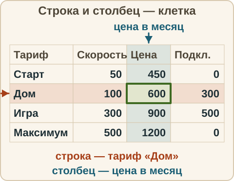
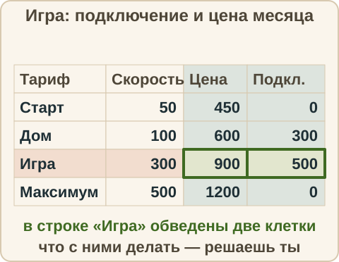

Математика: база · занятие 16Чтение таблицы
Цель: ты находишь в таблице нужное значение, сравниваешь значения и считаешь по табличным данным. Это основа заданий 1–5 ОГЭ: там почти всегда есть таблица, и первый вопрос — «прочитай значение». Ответы и подсказки спрятаны: сначала реши сам, потом нажми кнопку.
Как записывать ответ. Число — целое число. Дробь — через черту и сокращённая до конца, например 3/4. Десятичная дробь — с запятой, например 3,25. Ответ по таблице — число в тех единицах, которые указаны в заголовке столбца или в вопросе.
Вспомнить
Без подсказок, сразу проверка. Отмечай, на чём споткнулся, — в журнал.
- x/9 = 20/36. Найди x.
- Масштаб 1 : 100 000. На карте 5 см. Сколько километров на местности?
- 12 % от 50
- 7/10 + 1/5
- 1,5 · 0,6
- 4 − 9 + 2
Беглость: числа из прайса
Игра «числа из прайса». Назови результат. Ошибся — пример вернётся: попробуй ещё раз. Без таймера.
- 450 + 600
- 900 − 600
- 1200 − 450
- 300 + 500
- 12 · 450
- 3 · 600
Правило
Таблица. Таблица — способ записать данные в строках и столбцах. Строка — один объект (здесь — один тариф), столбец — одна величина (скорость, цена). Нужное значение стоит в клетке на пересечении строки и столбца.
Как читать таблицу.
- Прочитай вопрос и подчеркни: про какой объект (какая строка) и какую величину (какой столбец).
- Найди строку и столбец, проведи по ним пальцем или карандашом до пересечения.
- Посмотри на единицы в заголовке столбца (Мбит/с, рубли). Ответ — число в тех же единицах, если не просят иначе.
- Если нужно сравнить или посчитать — сначала выпиши нужные числа, потом считай.
Про границы. Слова «не больше» и «не меньше» включают само число (900 входит в «не больше 900»). Слова «меньше» и «больше» само число не включают.

| Тариф | Скорость, Мбит/с | Цена в месяц, руб. | Подключение (один раз), руб. |
|---|---|---|---|
| Старт | 50 | 450 | 0 |
| Дом | 100 | 600 | 300 |
| Игра | 300 | 900 | 500 |
| Максимум | 500 | 1200 | 0 |
Из жизни. Расписание уроков, прайс в магазине, расписание электричек — везде нужно найти строку и столбец и прочитать клетку.
Разобранный пример
1. Сколько рублей стоит месяц тарифа «Дом»?
- Строка — «Дом». Столбец — «Цена в месяц, руб.».
- На пересечении 600.
- Ответ: 600.
2. На сколько рублей в месяц тариф «Игра» дороже тарифа «Дом»?
- Выписываю: «Игра» — 900, «Дом» — 600.
- 900 − 600 = 300.
- Ответ: 300 рублей.
С подсказкой
Решай сам, глядя на таблицу выше. Подсказку открывай, только если застрял.
- Сколько рублей заплатит абонент тарифа «Игра» в первый месяц (подключение плюс цена месяца)?

Сам
Ответ — число. Два раза не сошлось — появится кнопка «Показать решение».
- Какая скорость (в Мбит/с) у тарифа «Максимум»?
- Какая наименьшая цена в месяц среди всех тарифов (в рублях)?
- Сколько тарифов стоят меньше 1000 рублей в месяц?
- Сколько рублей заплатит абонент тарифа «Дом» за первые три месяца (подключение один раз плюс три месяца)?
- Сколько тарифов имеют скорость не меньше 100 Мбит/с и цену в месяц не больше 900 рублей?
Ловушка
Ловушка. Сколько заплатит абонент тарифа «Игра» за первые два месяца? Многие считают 2 · 900 = 1800 и отвечают 1800: забыли, что подключение платят один раз в самом начале. Другие считают подключение за каждый месяц: 2 · (900 + 500) = 2800 — тоже неверно. Правильно: 500 + 2 · 900 = 2300. Проверка: выпиши все платежи по порядку — «подключение 500, месяц 1: 900, месяц 2: 900» — и сложи. Проверь себя: что платят один раз, а что каждый месяц?
Смесь
Тарифы — в таблице выше (смотреть можно). Это 10 заданий. Результат смотри в строке «Верно: N из 10» под заданиями.
- Сколько рублей стоят два месяца тарифа «Старт»?
- 20 % от 450
- Масштаб 1 : 20 000. На карте 6 см. Сколько метров на местности?
- 3/4 − 1/8
- 6 · 0,25
- На сколько Мбит/с скорость тарифа «Максимум» больше скорости тарифа «Игра»?
- Скидка 15 % на цену месяца тарифа «Игра». Сколько рублей составляет скидка?
- Цена месяца «Старт» выросла с 450 до 540 рублей. На сколько процентов?
- (−6) · (−3) − 20
- 48 : 6 · 2 + 1
Журнал
Запиши 1–3 строки: «что перепутал → как проверить». Пример формы: «прочитал не ту клетку → показываю пальцем строку и столбец и смотрю, где они пересекаются». Там же отметь результат смеси из строки «Верно: N из 10».
- …